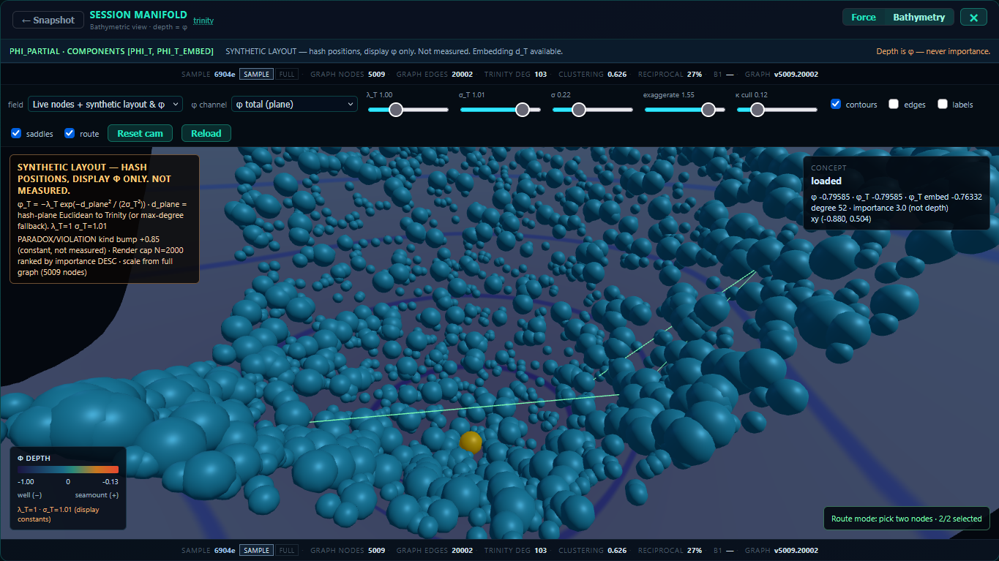
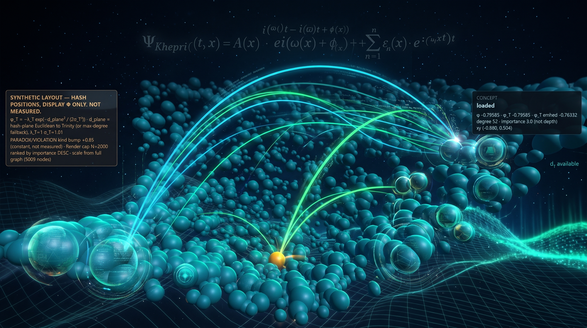
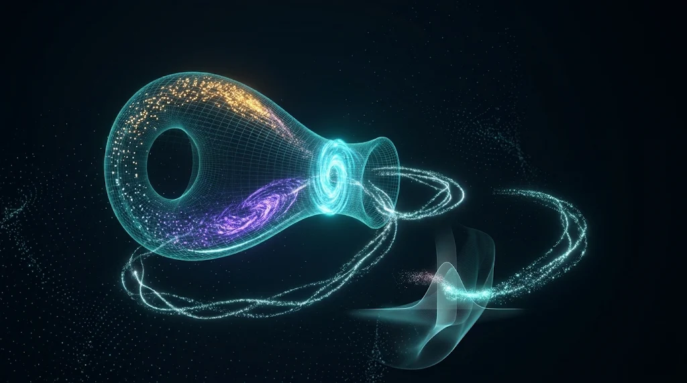
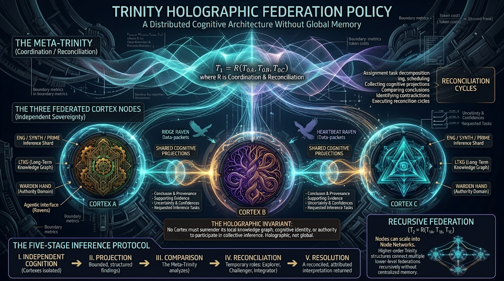

Calculate in coordinates.
A straight-line distance compares points in a chosen coordinate space. Vector similarity is another comparison, defined by its metric. Neither alone explains the evidence or intermediate concepts linking two ideas.
MODELS / DEMONSTRATIONS / OPEN QUESTIONS
Explore the models beneath the visual language. Interactive examples are synthetic; source-inspected mechanisms and unverified hypotheses retain their individual labels.
TOPOLOGY / DISTANCE / REASONING PATHS
Applying linear calculations to a curved semantic landscape means asking two different questions: how close are these representations, and what connects them?
A straight-line distance compares points in a chosen coordinate space. Vector similarity is another comparison, defined by its metric. Neither alone explains the evidence or intermediate concepts linking two ideas.
A graph route moves through explicit connections. A surface-constrained route follows the geometry of a surface. In these captures, the highlighted line represents an existing LTKG edge and the current calculation pathway for the selected relationship. Its straight rendering is distinct from a surface geodesic.
For cognition, the useful analogy is a sequence of bounded operations—compare, retrieve, test and revise—within a wider field of relationships. A plausible route still needs supporting evidence, explicit constraints and review.


In Trinity’s graph model, Trinity is the dominant weighted node. Other nodes are arranged by their relative weight to Trinity, with prime declination expressing their relationship to this reference. This describes the intended organizing principle; the captured bathymetric view still labels its positions as synthetic and its φ-depth as display-only. Graph weight, reference-relative arrangement and rendered depth are distinct quantities.
The Gaussian-field view gives the graph a reference frame around Trinity’s weight anchor. Where a concept falls on the map expresses its place within that constructed arrangement: its relation to Trinity, the surrounding neighbourhood and the field applied across the layout. The surface conveys structure that can be inspected and compared; it is more than a decorative backdrop.
Read placement, graph connections and the selected node’s values together. The screenshots identify the underlying positions as synthetic hash coordinates, with a Gaussian display field referenced to Trinity (or the configured fallback anchor). This makes a model of the relationships visible without turning φ-depth into importance, confidence or a measured physical quantity. Embedding-derived information is shown separately.
The distinction is between a meaningful constructed representation and a calibrated semantic distance. The field supports exploration of conceptual organization; claims about shortest reasoning paths or improved cognition still require a defined metric, traversal rules and evaluation.
Geometry reference: surface paths and geodesics ↗SEMANTIC TOPOLOGY / INTEGRATED STATE
Meaning is represented both in a concept and in its relationships. Trinity’s semantic-topology model explores how those contributions can be projected into a shared field: discrete records remain inspectable, while their combined influence forms a continuous landscape.

Records contain or reference content, metadata, provenance and temporal attributes. Importance is one scalar attribute, not the full record.
Edges carry relation, weight, confidence and history where supported. Changing a relationship can change context without changing either node’s content.
A defined projection spreads selected features into common coordinates. “Collapse” means aggregation here—not physical quantum collapse or lossless compression.
DETERMINISTIC SYNTHETIC EXAMPLE / CLASSICAL GAUSSIAN FIELD
Illustrative scalar field. All records below are synthetic.
Colour intensity → selected field value (cyan: nodes, green: relations, gold: combined) · Node size → importance · Edge thickness → weight. Curves are chosen for readability, not measured semantic curvature. The colour map is fixed across views.
A · Research artifact: fictional coastal note; importance 0.6; provenance demo-A; cycle 1.
B · Concept: coastal resilience; importance 1.0; metadata reference demo-B; cycle 1.
C · Review: evidence pending; importance 0.5; reference demo-C; cycle 1.
A → B / supports: base weight 0.7; confidence 0.8; reinforcement demo cycle 1.
B → C / awaits-review: base weight 0.45; confidence 0.6; reinforcement demo cycle 1.
F(q,t) = Σᵢ Kσ(q,xᵢ) aᵢ(t)
+ Σ₍ᵢ,ⱼ₎∈E ∫₀¹ Kτ(q,γᵢⱼ(s)) bᵢⱼ(t) ds
Kσ(q,x) = exp(−‖q−x‖² / (2σ²))
h(q,t) = P(F(q,t))
q is an evaluation position; xᵢ a displayed node position; aᵢ selected node features; γᵢⱼ a defined edge path; bᵢⱼ selected relationship features; σ and τ smoothing widths. Node and edge features must share compatible channels and units. This demo uses only dimensionless scalars, aᵢ = node influence × importance and bᵢⱼ = relationship influence × edge weight, with σ = τ.
The node term spreads selected features around node positions. The edge term spreads selected relationship features along their paths. Their sum places both in one field. The demo approximates each edge integral with 32 equal midpoint samples along a quadratic Bézier path; s is a unit-interval parameter, not arc length. P is the identity for this scalar demo, displayed as colour rather than physical height. A multi-channel model would need a separately specified projection.
Implementation distinction: the inspected manifold service uses a Trinity-centred Gaussian potential, not this sum of node and edge kernels. Its hash-plane coordinates and separate embedding-distance channel remain distinct. The integrated model above is illustrative; no proprietary production coefficients or update rules are disclosed.
Trinity’s “unified manifold of cognition” is a conceptual description of integrated state. Here, “manifold” refers to the displayed field representation; smoothing alone does not create cognition or establish a manifold topology. A scalar surface cannot contain every document, relation attribute or inference state.
The manifold is a coordinated view of information and relationship—one surface through which a richer underlying state can be explored.
SELECTIVE RETENTION / DURABLE GRAPH UPDATES
From incoming material to durable relational state.
Trinity’s long-term graph is designed to retain durable contributions from an interaction: concepts, weighted relationships, provenance, and changes to existing structure. Hierarchical consolidation can organize those contributions into more compact interfaces across abstraction layers. The aim is to increase useful relational structure without retaining every incoming token inside the graph.

Supported documents, conversations and tool results enter processing.
Candidate concepts, relationships and evidence are identified.
Policy-accepted packages may add nodes, reinforce edges or update supported attributes. Not every input produces every update.
Proposed higher-tier interfaces organize access to coherent subgraphs; they need not delete or replace the underlying records.
Later context can draw on graph relationships, summaries, vectors and retained sources where available.
SYNTHETIC THREE-INPUT DEMONSTRATION / NO INFERENCE OR MEMORY WRITES
Input 1 of 3 · after
S1: The fictional report links wetland buffers with reduced local flood exposure.
Wetland buffer · Flood exposure. These are synthetic concepts, not scientific findings.
Add Wetland buffer → Flood exposure / mitigates, weight 0.40; retain reference S1.
2 base concepts · 1 relation · 0 interface summaries
Interface summary: not yet created.
Wetland buffer → Flood exposure / mitigates: 0.40
Provenance: S1 retained sample
Demonstration values only. No byte-compression ratio is calculated.
S1: The fictional report links wetland buffers with reduced local flood exposure.
S2: A second fictional note repeats the same relationship with an additional observation.
S3: A fictional site review identifies a space constraint requiring qualification of that relationship.
Gₜ₊₁ = U(Gₜ, Δₜ)
Gₜ is retained graph state; Δₜ a policy-accepted update package; U the update operation. An illustrative Δ can include node additions/updates, edge additions/updates, provenance references and consolidation operations.
zC = S(G[C])
G[C] is the subgraph for cluster C; S a defined summarization or representation operation; zC its higher-tier interface. This is explanatory notation, not a disclosed production algorithm. A summary is not generally invertible: zC alone need not reconstruct the subgraph or original wording.
Durable graph state: selected concepts, relations, attributes and provenance.
Optional source storage: original artifacts where separately preserved and accessible.
Transient material: context not selected for retention.
Semantic compression is lossy with respect to original wording and omitted detail. Exact recovery requires a separately retained original and a valid accessible reference. Provenance identifies origins; it does not recreate deleted information.
Summaries can omit distinctions, references can become stale, and contradictions may require revision. An interface failure can impair higher-level retrieval. Expanding the underlying cluster and checking evidence helps review an abstraction.
The synthetic demo retains all lower-level records when adding its interface. This demonstrates a proposed mechanism—not a claim that production consolidation follows that exact lifecycle.
Nodes, edges, metadata, indexes, provenance and retained artifacts consume storage and computation. Greater density and abstraction depth are intended organizational patterns, not unlimited capacity. A “semantic heat sink” is an analogy for selective retention, not physical dissipation or a guarantee that discarded information is stored elsewhere.
Successive accepted updates give a graph its interaction history. A sufficiently complete snapshot can preserve that state; reconstructing it from public descriptions or a cold start is a different problem.
CONTENT → RELATIONSHIP → TOPOLOGY → INFERENCE
Structured content, weighted connections, and the geometry of context.
Trinity represents knowledge through structured records and weighted relationships. The landscape is a way to inspect selected properties of that structure: local content, relational strength, and context-dependent relevance. A numerical weight alone does not encode a document or a concept; representation comes from content and relationships together.

SYNTHETIC EXAMPLE / NO MEMORY WRITES OR INFERENCE CALLS
A fictional coastal research task links a concept, an artifact, supporting and conflicting claims, and a review record. Every example value is synthetic.
Radius → selected importance scalar · Thickness → weight · Colour → relation type · Confidence → explicit detail badge. Arc bend is drawn for readability, not measured curvature. No traversal animation is used.
Synthetic concept C-01. Content reference: fictional coastal research brief. Importance: 0.60. First and last seen: demonstration cycle 1. Lifecycle: review pending. Embedding reference: optional illustrative extension; no vector supplied.
Provenance: synthetic artifact A-01 and review record R-01. No real-world evidence has been supplied.
Node confidence: not assigned. Edge confidence is a separate stored attribute, not the node radius.
Illustrative retrieval score: · Edge confidence stays 0.80 when weight changes.
The inspected LTKG node schema includes identity, label, type, importance, metadata, first/last-seen timestamps and pruning protection. Content, artifact and evidence references can be represented through metadata or linked records; a dedicated embedding reference and lifecycle field are not established by this base table. They are illustrative extensions in this demonstration.
vᵢ = (idᵢ, cᵢ, mᵢ, pᵢ, tᵢ, zᵢ)
Explanatory notation—not a database tuple: c is content/reference, m metadata, p provenance, t temporal attributes and z an optional semantic representation. A radius shows one chosen scalar, not the record’s total complexity.
The inspected edge schema includes source and target identifiers, relation, weight, confidence, source, reinforcement cycle, timestamps, protection, metadata and query reference. Source/target fields support directed records; a displayed line does not by itself establish causation.
eᵢⱼ = (rᵢⱼ, wᵢⱼ, qᵢⱼ, hᵢⱼ)
Explanatory notation: r is relation, w weight, q confidence and h history/provenance. Weight, confidence, causal strength and probability are distinct. The example’s source and temporal references are synthetic, not retrieved records.
G = (V, E)
V contains the records; E contains their relationships.
S(i | q) = α sim(zq, zᵢ) + β Iᵢ + γ R(i, q)
Semantic similarity, importance and relational relevance can jointly influence retrieval. This is an illustrative model, not verified Trinity ranking code. The demo uses S = 0.5 × 0.80 + 0.2 × 0.60 + 0.3 × w. Only the synthetic support-edge weight w changes; confidence does not.
φT(x) = −λT exp[−d(x, xT)² / (2σT²)]
The inspected manifold field service implements this Trinity-centred Gaussian: x is display position, xT the reference-node position, λT influence amplitude, σT width and d the chosen distance. Its plane channel uses hash-based layout distances; an embedding channel separately uses cosine distance when vectors are available. This is a display field, not physical gravity or a calibrated semantic curvature. It is not the general sum-of-node-potentials model shown in some conceptual illustrations.

KHEPRI / LOCAL VARIATION
No authoritative Khepri expression was found in the inspected core material. The separate model below is a classical complex-valued field illustration, not Trinity runtime code and not quantum computation.
Ψ(x,t) = A(x) exp{i[ω(x)t + φ(x)]}
+ Σₖ₌₁ᴷ εₖ(x) exp{i[νₖt + θₖ(x)]}
A is base amplitude; ω base angular frequency; φ spatial phase; εₖ perturbation amplitude; νₖ perturbation angular frequency; θₖ perturbation phase. x denotes position and t time in this illustrative model.
P̃(x,t) = |Ψ(x,t)|²
This is illustrative intensity, not a normalized probability. A probability interpretation needs a domain, measure, normalization and empirical justification. Local structure can vary across a shared field; the display offers one way to explore that variation.
RESEARCH / COMPUTATIONAL SELF-REFERENCE
A perspective that returns through the system that produced it.
Trinity’s evaluator is part of the architecture it evaluates. The Klein bottle offers a visual language for this recursive relationship: a continuous structure in which a local frame can return transformed, without acquiring a globally external viewpoint.

01 / ESTABLISHED TOPOLOGY
A Klein bottle is intrinsically two-dimensional: each small surface neighbourhood needs two coordinates. It can be embedded without self-intersection in four-dimensional Euclidean space. Familiar three-dimensional depictions are immersions with crossings; a fourth spatial coordinate separates points that overlap in the representation. It is not time or a privileged observer.
There is no globally consistent orientation. A local orientation marker transported around a suitable orientation-reversing closed loop returns reversed; a second traversal restores it. Not every closed path reverses orientation.
Discrete edge-identification illustration—not an animated path on the artwork.
Mathematical background: Brown University: the Klein bottle in four-space · Harvey Mudd: Klein bottle.
02 / INTENDED COMPUTATIONAL ARCHITECTURE
Feedback becomes self-reference when a system processes representations of its own structure, state or outputs. Recirculating an external datum alone is feedback. Self-reference needs neither a Klein bottle nor four-dimensional geometry.
When invoked, PRIME evaluates the reasoning. It is not active in every cycle.
The new packet can include a prior self-evaluation. This is later-cycle retrieval, distinct from same-cycle PRIME review.
The evaluator can step outside a local exchange without stepping outside the system.
PRIME can be external to a particular ENG/SYNTH exchange while remaining internal to Trinity. When representations of the architecture are evaluated and carried into later inference, observer and observed are computationally coupled. This sequence describes the intended architecture, not a fresh implementation audit.
03 / PROPOSED ANALOGY · NOT AN IDENTITY
The analogy concerns perspective and closure. A new interpretation is not a measured orientation reversal, and a feedback diagram does not establish that Trinity’s state space is a Klein bottle.
THE RESEARCH QUESTION
Testing this requires context ablations, controlled provider comparisons, provenance traces and behavioural measurements. The artwork invites the question; repeatable evaluation must answer it.
TRINITY NODE NETWORK / INTER-CORTEX POLICY
Independent cognition. Distributed authority. Collective reconciliation.
Each federation node is a complete Cortex with its own ENG / SYNTH / PRIME structure, local LTKG and WARDEN authority domain. Authorized relationships form a graph of graphs: knowledge remains local while coordination becomes collective.

Cortexes exchange bounded findings, evidence, uncertainty and provenance. No participant must surrender its graph or cognitive identity. A projection need not reconstruct its originating LTKG.
Meta-Trinity decomposes tasks, schedules requests, compares projections and reconciles disagreement. Its durable mission and delivery state is operational memory—not a mandatory global LTKG.
Authorization from one Cortex does not confer privileges in another. Each receiver controls admission, disclosure and local writes. A federation conclusion is input for local evaluation, never an automatic graph mutation.
Recursive federation coordinates complete systems at higher levels without automatically absorbing them. Raven transports carry requests; they are not the authority layer. Local switchboards must handle durable admission, idempotency, scheduling, resource limits, results and recovery.
Architectural specification · Implementation and validation in progress. Agreement does not prove correctness; shared providers and histories can correlate errors. Scaling benefits require controlled budgets and measured queue, inference, delivery and reconciliation outcomes.
Read the complete 12-part Federation Policy ↗